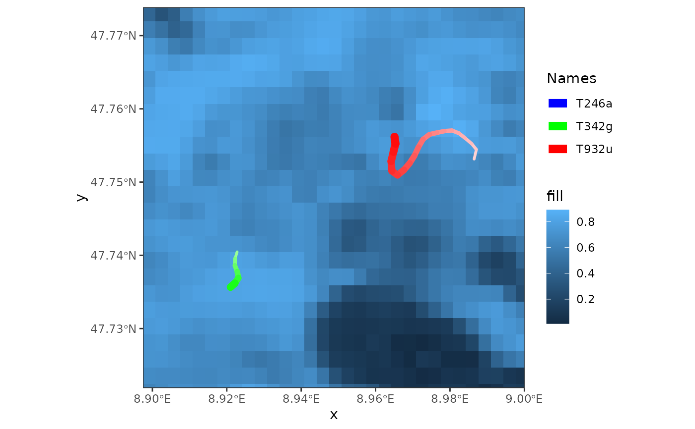
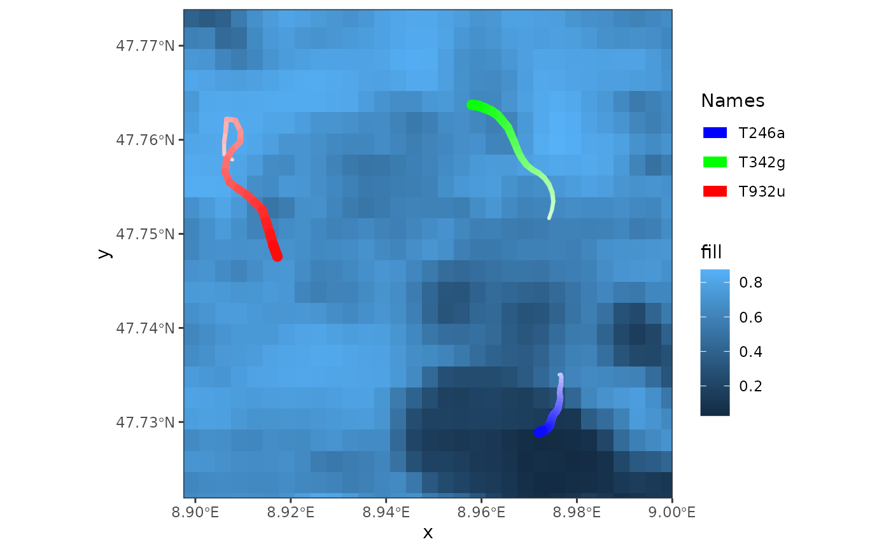
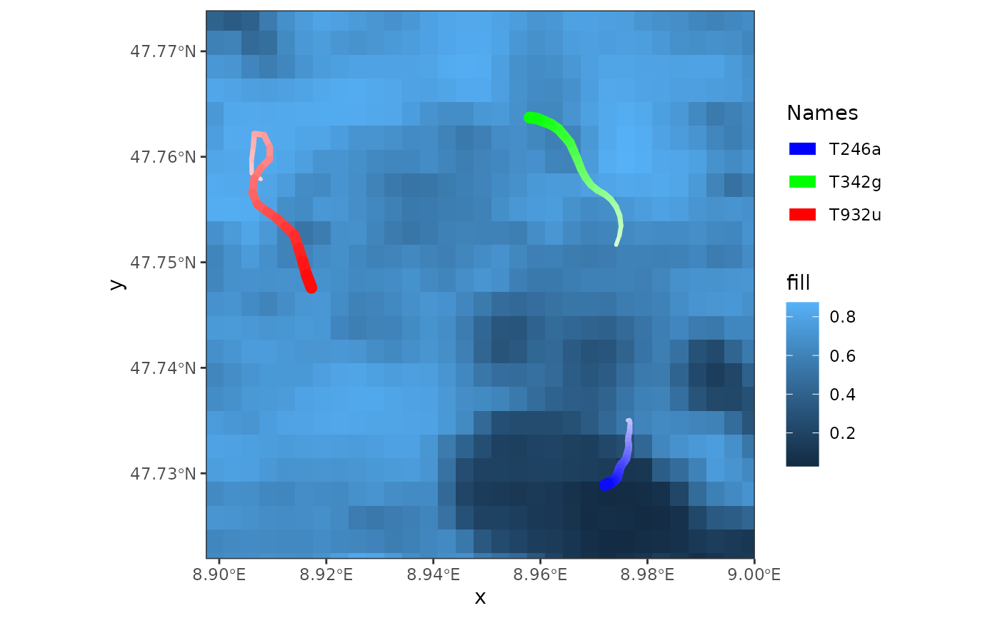

Render an individual frame
render_frame.RdThis function renders an individual frame. It yields the same result as if an individual frame is extracted using default subsetting [[]].
Usage
# S3 method for class 'moveVis'
x[[i, ...]]
render_frame(frames, i = length(frames))Examples
library(moveVis)
library(move2)
library(terra)
data("move_data", package = "moveVis")
r <- readRDS(example_data(file = "basemap_data.rds"))
# align movement
m <- align_move(move_data, res = units::set_units(4, "min"))
#> Temporal resolution of 4 [min] is used to align trajectories.
# create spatial frames
frames <- frames_spatial(m, r, r_type = "gradient", fade_raster = TRUE)
#> Processing input data...
#> Approximated animation duration: ≈ 7.52s at 25 fps using 188 frames
#> CRS (geodetic): WGS 84
#> Assigning raster maps to frames...
# viewing frames calling this function:
render_frame(frames) # displays the last frame

render_frame(frames, i = 100) # displays frame 100
 # alternatively, you can simply use `[[` to do this:
frames[[100]] # displays frame 100

# alternatively, you can simply use `[[` to do this:
frames[[100]] # displays frame 100
